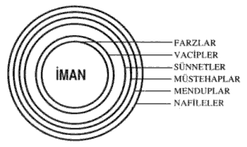

Îmanýn Koruyucu Kaleleri
Îman, mü'minin kalbinde Allâh'ýn yaktýðý bir meþ'ale, bir nurdur. Bunun koruyucu kaleleri, çerçevesi, surlarý ise, aþaðýdaki þekilde görüleceði gibi farzlar, vâcibler, sünnetler, müstehablar, mendublar ve nâfilelerdir.

Îman, bu ibâdetlerle çerçevelenip kale içine alýnarak korunur. Ýmaný koruyan bu kaleleri yýkanlar yani, farzlarý, vâcibleri, sünnetleri terk edenler, imanlarýný kolay kolay muhafaza edemezler.
Farz, vâcib, sünnet, müstehab, mendûb ve nafilelerin târifleri ilerideki sayfalarda gelecektir.